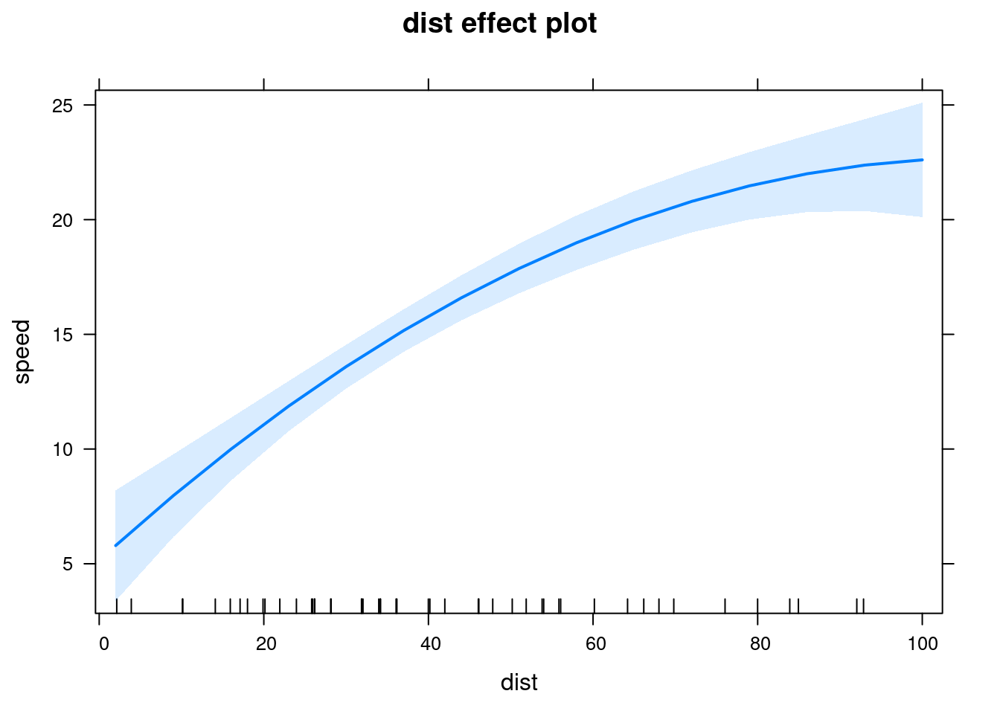
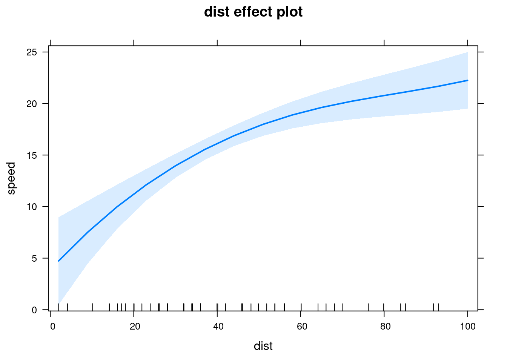

Built using Zelig version 5.1.4
For convenience, you may wish to transform one or more of your covariates within the model estimation call. For example, imagine we want to natural log transform the variable dist in a linear regression:
z.log <- lm(speed ~ log(dist), data = cars)Then we want to find quantities of interest when the dist variable is 26 to 56 (the first to third quartile):
library(effects)## Loading required package: carData## lattice theme set by effectsTheme()
## See ?effectsTheme for details.library(lsmeans)## Loading required package: estimabilityzef <- Effect("dist", z.log, xlevels = list(dist = 26:50))
as.data.frame(zef)## dist fit se lower upper
## 1 26 13.84416 0.4570535 12.92520 14.76313
## 2 27 14.05552 0.4503177 13.15010 14.96095
## 3 28 14.25919 0.4446788 13.36511 15.15328
## 4 29 14.45572 0.4400611 13.57091 15.34052
## 5 30 14.64558 0.4363922 13.76815 15.52300
## 6 31 14.82921 0.4336033 13.95739 15.70103
## 7 32 15.00702 0.4316286 14.13917 15.87486
## 8 33 15.17935 0.4304055 14.31396 16.04474
## 9 34 15.34653 0.4298744 14.48221 16.21085
## 10 35 15.50887 0.4299787 14.64434 16.37340
## 11 36 15.66664 0.4306650 14.80073 16.53255
## 12 37 15.82008 0.4318831 14.95173 16.68844
## 13 38 15.96944 0.4335856 15.09765 16.84122
## 14 39 16.11491 0.4357284 15.23882 16.99100
## 15 40 16.25670 0.4382705 15.37549 17.13790
## 16 41 16.39498 0.4411735 15.50794 17.28202
## 17 42 16.52994 0.4444021 15.63641 17.42347
## 18 43 16.66172 0.4479236 15.76111 17.56233
## 19 44 16.79047 0.4517080 15.88225 17.69869
## 20 45 16.91632 0.4557275 16.00002 17.83262
## 21 46 17.03941 0.4599570 16.11461 17.96422
## 22 47 17.15985 0.4643732 16.22617 18.09354
## 23 48 17.27776 0.4689549 16.33486 18.22066
## 24 49 17.39324 0.4736829 16.44083 18.34564
## 25 50 17.50638 0.4785395 16.54421 18.46855lsmeans(z.log, "dist", at = list(dist = 26:50))## dist lsmean SE df lower.CL upper.CL
## 26 13.84416 0.4570535 48 12.92520 14.76313
## 27 14.05552 0.4503177 48 13.15010 14.96095
## 28 14.25919 0.4446788 48 13.36511 15.15328
## 29 14.45572 0.4400611 48 13.57091 15.34052
## 30 14.64558 0.4363922 48 13.76815 15.52300
## 31 14.82921 0.4336033 48 13.95739 15.70103
## 32 15.00702 0.4316286 48 14.13917 15.87486
## 33 15.17935 0.4304055 48 14.31396 16.04474
## 34 15.34653 0.4298744 48 14.48221 16.21085
## 35 15.50887 0.4299787 48 14.64434 16.37340
## 36 15.66664 0.4306650 48 14.80073 16.53255
## 37 15.82008 0.4318831 48 14.95173 16.68844
## 38 15.96944 0.4335856 48 15.09765 16.84122
## 39 16.11491 0.4357284 48 15.23882 16.99100
## 40 16.25670 0.4382705 48 15.37549 17.13790
## 41 16.39498 0.4411735 48 15.50794 17.28202
## 42 16.52994 0.4444021 48 15.63641 17.42347
## 43 16.66172 0.4479236 48 15.76111 17.56233
## 44 16.79047 0.4517080 48 15.88225 17.69869
## 45 16.91632 0.4557275 48 16.00002 17.83262
## 46 17.03941 0.4599570 48 16.11461 17.96422
## 47 17.15985 0.4643732 48 16.22617 18.09354
## 48 17.27776 0.4689549 48 16.33486 18.22066
## 49 17.39324 0.4736829 48 16.44083 18.34564
## 50 17.50638 0.4785395 48 16.54421 18.46855
##
## Confidence level used: 0.95We could also estimate the model with dist as a polynomial. For example:
# Find range of polynomial values
library(magrittr)
lm(speed ~ poly(dist, 2), data = cars) %>%
Effect(focal.predictors = "dist") %>%
plot()
Splines and other transformations should generally work as expected.
library(splines)
lm(speed ~ bs(dist, df = 4), data = cars) %>%
Effect(focal.predictors = "dist") %>%
plot()